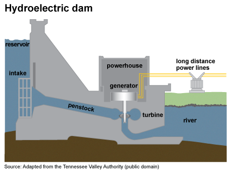

The History of Renewable Energy
Hydroelectric energy
How it works
Image from EIA (Energy Information Administration)

The basic principle behind hydroelectricity involves
the conversion of the kinetic energy of moving water into electrical energy. Typically, a dam is constructed to create a reservoir, creating a height difference or head between the water
level upstream and downstream. As water is released from the reservoir, it flows through turbines connected to generators. The force of the flowing water causes the turbines to spin, converting
mechanical energy into electrical energy. The generated electricity is then transmitted through power lines for distribution. Hydroelectric power is considered a clean and efficient form of
energy, as it produces minimal greenhouse gas emissions and provides a reliable source of electricity. Additionally, the flexibility of hydroelectric plants allows for the adjustment of power
output to meet varying energy demands, making it a valuable component of a diversified and sustainable energy portfolio.
Brief History
Image from read works

The history of hydroelectric energy dates back thousands of years, with early civilizations using the power of flowing water for various mechanical tasks. However, the true advent of hydroelectric power as a significant energy source emerged in the late 19th century. The first hydroelectric power plant was built in 1882 on the Fox River in Appleton, Wisconsin, USA, by the paper manufacturer H.J. Rogers. The plant utilized a waterwheel to generate electricity for the paper mill's lighting and motors. Subsequently, in 1889, the Niagara Falls Power Company successfully harnessed the immense power of Niagara Falls, marking a pivotal moment in the development of hydroelectricity on a larger scale. The 20th century witnessed a rapid expansion of hydroelectric projects globally, with the construction of large dams and power plants. Notable examples include the Hoover Dam in the United States (1936) and the Three Gorges Dam in China (completed in 2012). Hydroelectric energy has since become a cornerstone of renewable energy production, providing clean and sustainable electricity to millions worldwide.
How it has helped sustainability
Image from The Irish Independant

Over the past few decades, hydroelectric energy has
played a pivotal role in promoting sustainability by
providing a reliable and renewable source of electricity.
Hydroelectric power plants have been instrumental in
reducing dependence on fossil fuels, thereby mitigating
greenhouse gas emissions and contributing to the global
effort to combat climate change. The consistent and
controllable nature of hydroelectric energy production
allows for effective integration into power grids,
helping stabilize energy supply and meet growing
demands. Moreover, the reservoirs created by
hydroelectric dams serve additional purposes
, such as flood control, water supply management,
and recreation. In certain regions,
hydroelectric projects have been designed with a
focus on minimizing environmental impacts,
implementing fish-friendly technologies and
habitat restoration programs. The ability of
hydroelectric systems to respond quickly to
fluctuations in energy demand further enhances
their suitability in modern, dynamic energy
landscapes. As societies increasingly
prioritize sustainable energy practices,
hydroelectric power remains a cornerstone of
the clean energy transition, offering a
proven and environmentally friendly solution to
meet the world's growing energy needs.